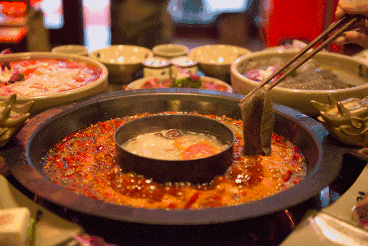
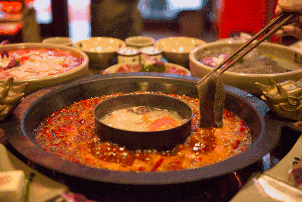

涮（shuàn) It means cutting food into thin slices, briefly boiling water and dipping the food into the sauce to eat. The popular hot pot dish is typical combined with the cooking skills of 涮（shuàn).
 
